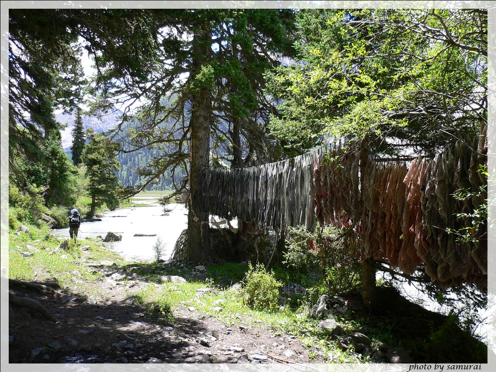
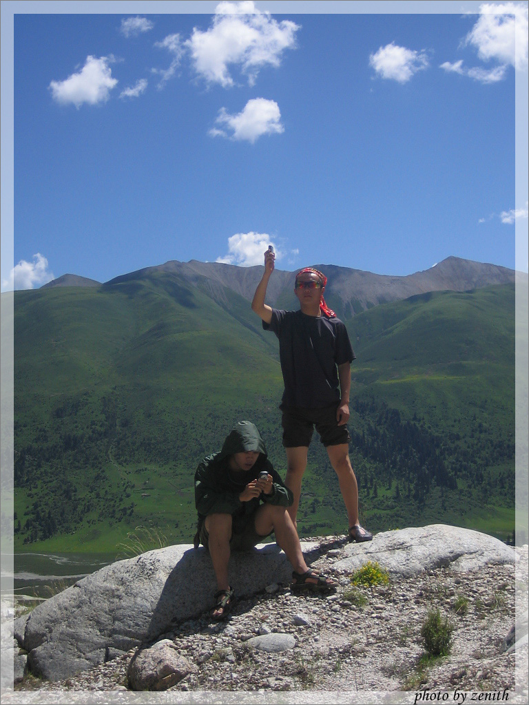
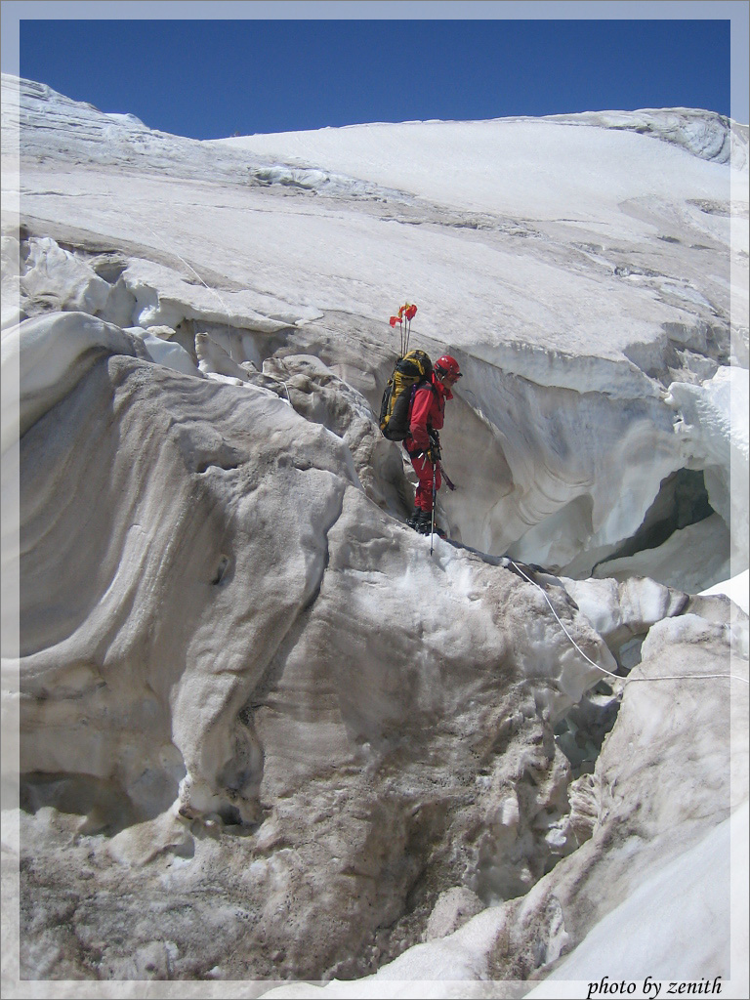
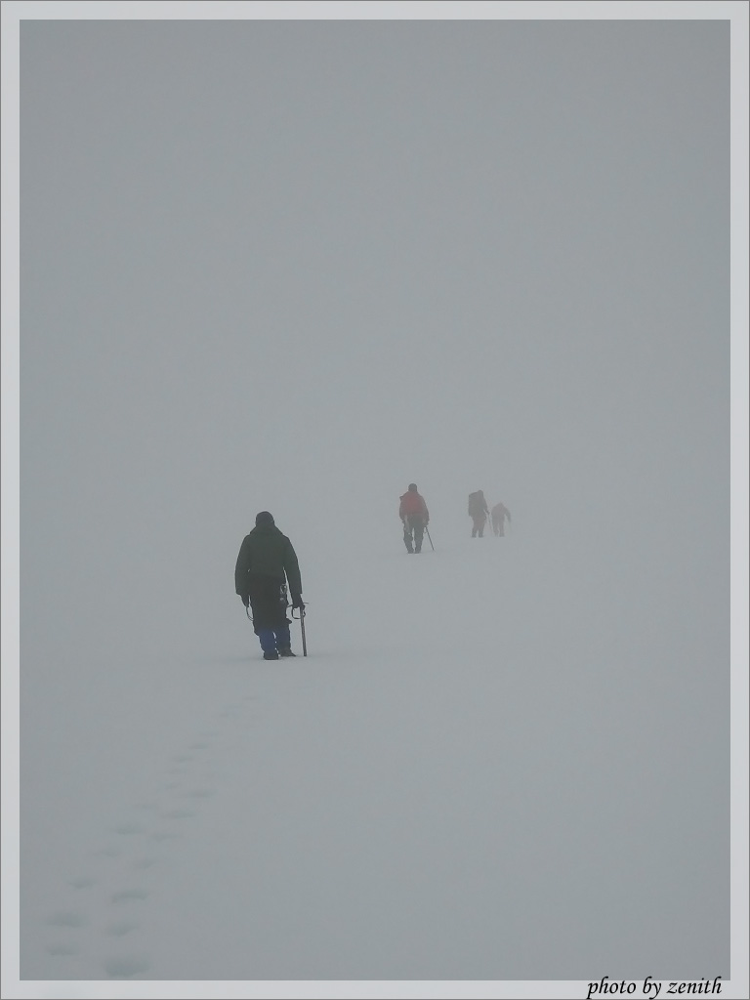
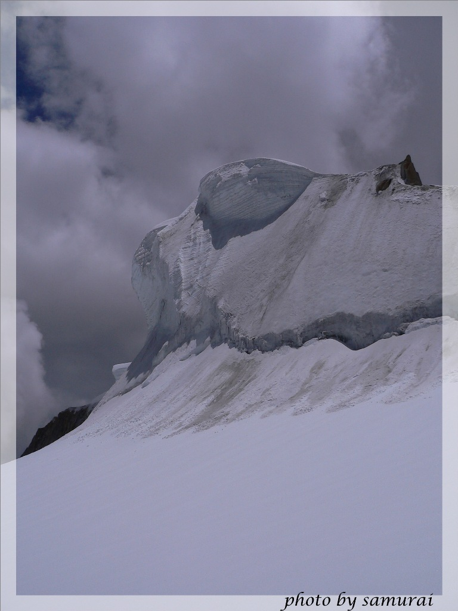

发信人: billyxs (into the wild), 信区: outdoor
标 题: chola——攀登 zenithzero (转载)
发信站: 饮水思源 (2012年10月13日09:33:55 星期六), 站内信件
【 以下文字转载自 outdoor 讨论区 】
【 原文由 zenithzero 于 2006年08月29日02:17:39 星期二 发表 】
【 原文链接 】
雀儿山的攀登，于我来说最艰苦的部分是等待。等待许可证，等待假期，等待长达6天的车
程的结束。7月16日,最后一次捣车前,石磊花6元钱,在甘孜买一块红布,一支水笔,做了一条
属于他的旗帜.
screen.width - 200){this.width = screen.width - 200}">
当看到山的一刻，激动早已在等待中割离成阵阵轻微的兴奋。玛尼干戈看雀儿
山确实很美，冰川在蓝天中倾泻下来，与一望无际的大草原相接。天水成一色。
screen.width - 200){this.width = screen.width - 200}">
从车上下来,我们暴露在透彻的阳光下.迅速的整理装备,上保护站交割手续,雇佣畜力,我领
着队伍即刻向大本营进发.这个光景,已是下午13:30,最原本打算第一天就进行一次运输的
计划落空了.我失望稍许.然而去大本营的路,让人立刻将情绪放下,平和的看经幡、湖水、
散落着小花的草地走进心间。很宁静。
 screen.width - 200){this.width = screen.width - 200}">
screen.width - 200){this.width = screen.width - 200}">
大本营建立在海拔4300米，一个巨大的瀑布下。冰川融水随太阳东升西落而规律变化，于
是瀑布在下午达到最狂野的状态。瀑底的水潭叫干海子，我们的营地，在海子湖畔。

7月16日，登山的第二天是运输物资，从4300米直到5150米。刚进山的第一次上升是非常痛
苦，高反严重的折磨身体。然而这一天路线很丰富，从碎石到岩壁，最后还有冰川。很好
的调节了攀登情绪。
screen.width - 200){this.width = screen.width - 200}">
screen.width - 200){this.width = screen.width - 200}">
screen.width - 200){this.width = screen.width - 200}">
队里我状态最差，痛苦的上升让我曾一度怀疑攀登的意义。一路磨难一路思考，攀登带给
我许多精神层次上的东西。爱，这种情绪在磨难、摇摆、置疑后，变得更加真诚并且坚定
。就要上冰川时，看到了最后一朵花儿，蓝蓝的，在冰川融蚀过的石头间。这里海拔4800
米。
screen.width - 200){this.width = screen.width - 200}">
screen.width - 200){this.width = screen.width - 200}">
4950米，终于到达冰川，有些兴奋了。开始冰雪攀登，小试牛刀。
screen.width - 200){this.width = screen.width - 200}">
screen.width - 200){this.width = screen.width - 200}">
C1裂缝纵横，很壮观，也相当危险。完成运输，不休息立刻下撤。体力消耗巨大。
screen.width - 200){this.width = screen.width - 200}">
7月17日，休整。在一天的炼狱后，与世隔绝的本营变成了真正的天堂。天湛蓝，阳光温馨
，我穿过海子，上对面的大石头上晒日光浴。
screen.width - 200){this.width = screen.width - 200}">
我无牵挂，满心享受这攀登。后来，大家也上来了，用这高地发消息。同样的地点，同样的
事件，不同的人目的也不同。这一天，过得很宁静，很惬意。
 screen.width - 200){this.width = screen.width - 200}">
7月18日，颠峰梦想开始的日子。4300米上升至5150米C1营地。我状态很好。除一名队员跟
不上队伍节奏的风波外，这天算相当的顺利。石磊在裂缝上跳来跳去，留念。一个月后，
也是在这里的裂缝，青岛的山友陨命于此。
screen.width - 200){this.width = screen.width - 200}">
screen.width - 200){this.width = screen.width - 200}">
7月19日，目标推进到5550米C2。攀登开始增加难度。雀儿山危险的潘多拉盒子打开。C1出
发，沿30度上升70米海拔，到达面目最恐怖的乱冰区。看到纠结的裂缝断崖，我开始兴奋
，这是攀登盛宴的开始。
screen.width - 200){this.width = screen.width - 200}">
screen.width - 200){this.width = screen.width - 200}">
第一段攀冰pitch，严冬冬领攀。我最后一个上，很吃力，因为尝试靠自己双镐上，保护是
虚的。上去后，路线被裂缝断成复杂的“之”字。找路需要迂回，需要智慧和经验，严冬
冬一马当先。攀冰，跨裂缝，行军，节奏是变换的，队伍休息的也更好。
screen.width - 200){this.width = screen.width - 200}">
 screen.width - 200){this.width = screen.width - 200}">
screen.width - 200){this.width = screen.width - 200}">
2个小时后，通过乱冰区，进入死亡地带，遍布暗裂缝雪原。洁白无暇的世界，将人从丑陋
的乱冰区带入纯洁的天堂。然则不要被这假象蒙骗，这才是真正的地狱。薄雪覆盖下，是
深达百米的裂缝，裂缝中阳光被阻，空气不入，除了一旦坠入的撞击外，超低温和缺氧是
致死的双保险。冬冬熟悉路线，开路在前。我们甚至没有结组。天空，雪山，自然界的尺
度很大，我们很小。
screen.width - 200){this.width = screen.width - 200}">
screen.width - 200){this.width = screen.width - 200}">
下午3点到达C2。想看看我们海拔最高的家和环境吗？
screen.width - 200){this.width = screen.width - 200}">
screen.width - 200){this.width = screen.width - 200}">
screen.width - 200){this.width = screen.width - 200}">
7月20日，冲顶的日子，最值得期待的一天。凌晨5：30，我一夜失眠，出发时仍旧精神抖
擞。时差2小时，夜气清冷，在灯光中走向颠峰。朝阳渐起，我们是逐日的人。
screen.width - 200){this.width = screen.width - 200}">
screen.width - 200){this.width = screen.width - 200}">
在最后的夜幕中,攀上5600米处雪断层，迎来了冰雪世界中炫目的白昼。这里比云的家要高
。我们可以俯瞰云的魔术。
screen.width - 200){this.width = screen.width - 200}">
screen.width - 200){this.width = screen.width - 200}">
颠峰近了，然而攀登的困难从未减少。大雾封锁了通向主峰的路，我们只能凭着记忆，在
苍茫的世界中朝颠峰的大致方向前进。雪很深，走的很慢，不仅因为累，也因为要等待顶
峰的出现。透过时间，我还是能感受那时的情绪波动。不仅仅有等待的焦躁，更有攀登
中找到的深沉的宁静。风云变幻间，主峰露出惊鸿一瞥。尽管大雾的缺口重新缝合，冲顶
的路也不再神秘，颠峰不再遥远。于是攀冰，横切，攀冰，通过刃脊上的雪檐，我们的身
影同红旗一起出现在川藏之颠。
 screen.width - 200){this.width = screen.width - 200}">
screen.width - 200){this.width = screen.width - 200}">
screen.width - 200){this.width = screen.width - 200}">
screen.width - 200){this.width = screen.width - 200}">
screen.width - 200){this.width = screen.width - 200}">
登顶！上海历史上第一次。这只会成为后来的评价。攀登本身的味道，需要用身体和心灵
一齐去体验，那不就是整个生命么？拍照后立即下撤，和大部队开始汇合，开始返回营地
。冲顶从5：30开始，到11：40完成，巨大的消耗的让返回变得痛苦而危险。几乎所有队员
都接近虚脱。雪晒的更软了，路，刻骨铭心的艰难。有人腿软摔到了，有人冻的牙关发抖
。然而，欣慰的是，所有人安全的返回了营地。回看顶峰，像巨大的鹰，虎视耽耽，似乎
想吞没我们。
screen.width - 200){this.width = screen.width - 200}">
screen.width - 200){this.width = screen.width - 200}">
 screen.width - 200){this.width = screen.width - 200}">
时间开始发酵，06年夏天的故事像封存的酒开始沉寂。或许很多年后，当我们打开这瓶酒
时，那些丰繁复杂的滋味又会涌上心头。那味道，会有年青，会有那些生死相依的朋友。
冰颖登山队
队员：杨振晔，交大土木03本
screen.width - 200){this.width = screen.width - 200}">
队员：陈凡，交大机械02本
screen.width - 200){this.width = screen.width - 200}">
队员：蔡铮宇，复旦物理04本
screen.width - 200){this.width = screen.width - 200}">
队员：陆宜，复旦软件04本

队员：于洋，交大联读05本
screen.width - 200){this.width = screen.width - 200}">
教练：石磊，地质大学（武汉）金融99本
screen.width - 200){this.width = screen.width - 200}">
攀登队长：严冬冬，清华生科01本
screen.width - 200){this.width = screen.width - 200}">
队长：张宇明，交大力学05博
screen.width - 200){this.width = screen.width - 200}">
--
命运无法挑战
我的奔流岁月
outdoor_life/running_life
※ 来源:·饮水思源 bbs.sjtu.edu.cn·[FROM: 202.120.50.43]
※ 修改内容:·zenithzero 于 08月29日03:05:34 修改本文·[FROM: 202.120.50.43]
※ 修改内容:·zenithzero 于 08月29日03:46:11 修改本文·[FROM: 202.120.50.43]
※ 修改内容:·zenithzero 于 08月29日04:14:07 修改本文·[FROM: 202.120.50.43]
--
※ 转载:·饮水思源 bbs.sjtu.edu.cn·[FROM: 219.228.113.248]
|